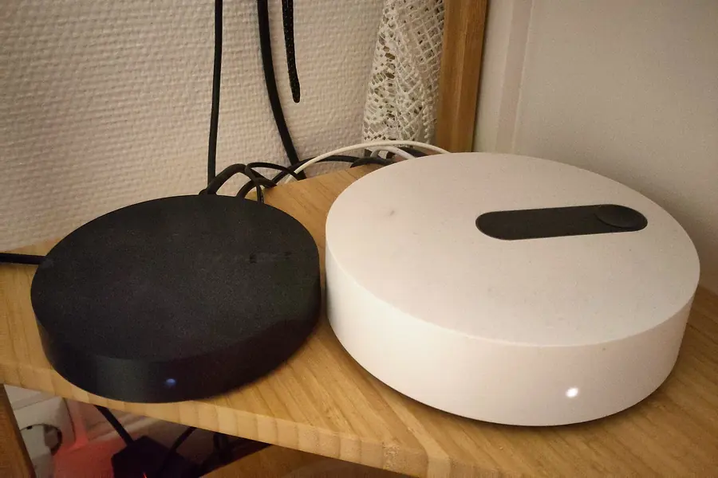
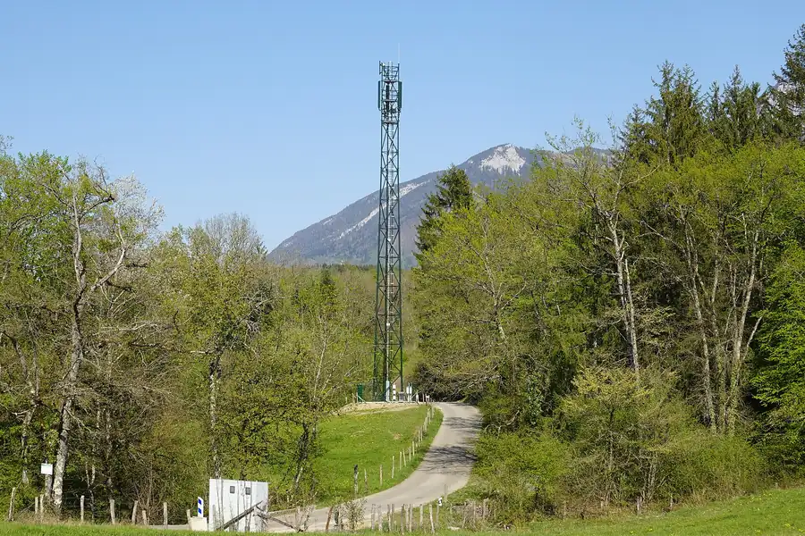
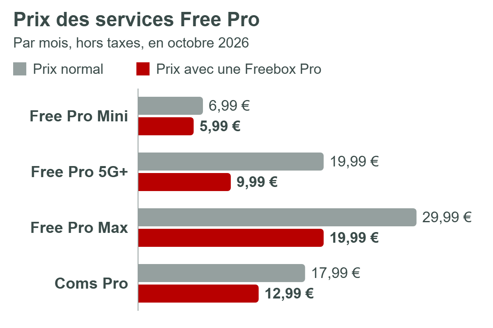
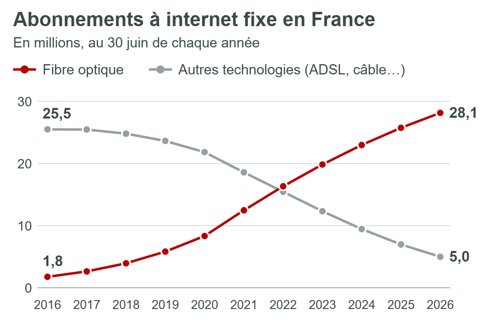

Cette page présente ce que Free vend aujourd'hui : ses box internet, ses forfaits mobiles et ses offres pour les professionnels. La dernière partie replace ces offres dans le marché français de l'internet fixe et mobile. Les prix indiqués sont ceux affichés sur les sites de Free le 8 octobre 2026 ; ils peuvent avoir changé depuis.
Les offres Internet fixe
Chez Free, la box internet s'appelle la Freebox. La première date de 2002 : c'est elle qui a popularisé en France la « box » qui regroupe internet, le téléphone et la télévision. En octobre 2026, la gamme compte six offres, toutes sans engagement.
Quatre d'entre elles associent la fibre et le Wi-Fi 7. La Freebox Pop S, à 24,99 € par mois, va à l'essentiel : internet à 5 Gbit/s au maximum et le téléphone fixe, sans télévision. La Freebox Pop y ajoute un boîtier TV et plus de 300 chaînes, pour 29,99 € par mois la première année puis 39,99 €. Les Freebox Ultra Essentiel (39,99 € puis 49,99 €) et Ultra (49,99 € puis 59,99 €) montent à 8 Gbit/s, en envoi comme en réception. L'Ultra comprend aussi Netflix, Disney+, Amazon Prime et la chaîne Canal+.
Restent deux cas particuliers. La Freebox Révolution Light (24,99 € puis 29,99 €) reprend un modèle plus ancien, limité à 1 Gbit/s. La Box 5G (29,99 € puis 39,99 €) passe par le réseau mobile : elle vise les logements que la fibre ne dessert pas encore. Presque tous ces prix augmentent au bout d'un an, de 10 € le plus souvent. Ce tarif réduit la première année sert à attirer de nouveaux abonnés.

Les forfaits mobiles
Free Mobile a démarré le 10 janvier 2012 avec deux forfaits sans engagement, à 2 € et à 19,99 € par mois. Ces deux prix n'ont jamais bougé, et Free s'est engagé à ne pas les augmenter jusqu'en 2027. C'est le contenu qui a changé : le forfait à 19,99 € donnait droit à 3 Go d'internet en 2012, contre 350 Go en 5G aujourd'hui.
La gamme compte désormais quatre forfaits. Le Forfait 2 € comprend deux heures d'appels, les SMS et MMS illimités et 50 Mo d'internet. La Série Free coûte 12,99 € par mois pendant un an pour 110 Go, puis elle bascule sur le Forfait Free 5G+, celui à 19,99 €. Le dernier arrivé, le Forfait Free Max (29,99 €), date de mars 2026 : internet y est illimité en France et dans plus de 140 destinations à l'étranger.
Free encourage ses clients à prendre la box et le mobile chez lui. Pour un abonné Freebox, le Forfait 2 € est gratuit, le Forfait Free Max passe à 19,99 € et le Forfait Free 5G+ à 9,99 € la première année (15,99 € ensuite dans la plupart des cas). Tous ces forfaits passent par le réseau mobile de Free, le plus récent des quatre réseaux français. La 5G y est ouverte depuis décembre 2020 et couvre 94 % de la population, selon l'opérateur.

Les offres pour les professionnels
Depuis le 23 mars 2021, Free s'adresse aussi aux entreprises sous la marque Free Pro. Cette activité s'appuie sur Jaguar Network, un hébergeur marseillais racheté par le groupe iliad, la maison mère de Free. Free Pro revendique aujourd'hui plus de 100 000 clients.
L'offre de base est la Freebox Pro : 39,99 € hors taxes par mois la première année, puis 49,99 €, toujours sans engagement. Elle reprend la fibre à 8 Gbit/s et le Wi-Fi 7 de la Freebox Ultra. Elle y ajoute ce dont une petite entreprise a besoin : deux lignes fixes, un forfait mobile 5G+, une connexion de secours automatique en cas de panne et une première protection contre les cyberattaques.
Autour de cette box, Free Pro vend trois forfaits mobiles, de 6,99 € à 29,99 € hors taxes, et une offre de téléphonie d'entreprise, Coms Pro. Comme chez les particuliers, ces services coûtent moins cher quand on a déjà la box : c'est ce que montre le graphique. Pour les grandes entreprises et les administrations, Free Pro propose enfin des solutions sur mesure, regroupées sous le nom XPR : cloud, cybersécurité, hébergement en datacenter ou réseaux d'entreprise.

Le marché de l'internet fixe et mobile
Fin juin 2026, la France comptait 33,1 millions d'abonnements à internet fixe, selon l'Arcep, le régulateur des télécoms. La fibre en représente 85 %, contre 20 % sept ans plus tôt. L'ADSL est en train de disparaître : le réseau en cuivre sur lequel il fonctionne doit fermer d'ici 2030. Chez Free, la bascule est encore plus avancée, puisque 6,9 de ses 7,6 millions d'abonnés fixes sont en fibre.
Côté mobile, 84,7 millions de cartes SIM sont en service, sans compter les objets connectés. C'est plus que le nombre d'habitants, et 44 % d'entre elles utilisent déjà la 5G. Free compte 15,8 millions d'abonnés mobiles.
Quatre opérateurs possèdent leur propre réseau : Orange, SFR, Bouygues Telecom et Free. Ils pourraient n'être plus que trois dans quelques années. Le 6 juin 2026, les trois concurrents de SFR ont signé un protocole d'accord pour le racheter ensemble, au prix de 20,35 milliards d'euros, dont 31 % pour Free. L'Autorité de la concurrence doit encore autoriser l'opération, et son examen devrait durer au moins dix-huit mois. Les parts de marché de chaque opérateur sont détaillées sur la page Économie.

Sources
- Offres et prix : free.fr, mobile.free.fr et pro.free.fr, consultés le 8 octobre 2026.
- Abonnés de Free : résultats du groupe iliad au premier semestre 2026 (PDF).
- Chiffres du marché : observatoire des communications électroniques de l'Arcep, deuxième trimestre 2026.
- Rachat de SFR : communiqué commun des trois opérateurs (6 juin 2026) et communiqué de l'Autorité de la concurrence (15 juillet 2026).